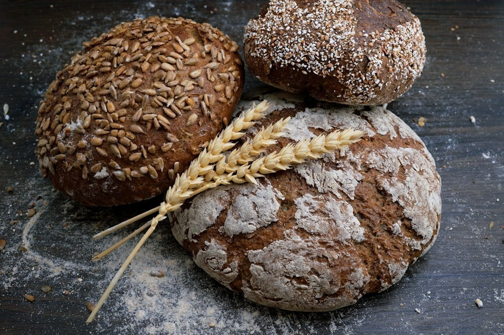

Wo Sie uns finden
Eine AuswahlDie Liste ist eine Auswahl und wächst gelegentlich. Wenn Sie unsere Liköre in einem Geschäft entdecken, das hier fehlt — oder eines betreiben — sagen Sie uns Bescheid.
Man trifft sich im Oktober
Es gibt Gelegenheiten, bei denen man uns nicht im Regal, sondern hinter dem Stand trifft. Die wichtigsten liegen im Herbst.
Erntedankfest
Der passendste Termin im Jahr für eine Getreidebrennerei: Wenn das Korn eingefahren ist, wird gefeiert. Traditionell sind wir dabei.
Handwerkermarkt in Jülich
Im Oktober, zwischen Ständen von Leuten, die ihre Sachen selbst machen. Ein guter Ort, um beide Liköre nebeneinander zu probieren und den Unterschied im direkten Vergleich zu schmecken.
Stadtfeste der Region
Gelegentlich stehen wir auch auf Stadtfesten in der Umgebung. Feste Termine gibt es dafür nicht — fragen Sie gern nach, wenn Sie wissen möchten, wo wir als Nächstes sind.
Sie richten selbst ein Fest aus?
Ob Vereinsjubiläum, Hochzeit oder Firmenfeier: Für Veranstaltungen liefern wir gern. Sprechen Sie uns an — am besten mit etwas Vorlauf.
Direkt bestellen
Sie müssen nicht warten, bis Sie an einem Händler vorbeikommen. Telefon und E-Mail gehen immer.
